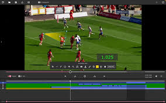
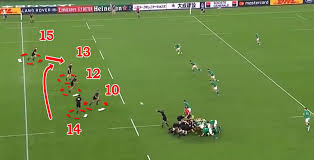
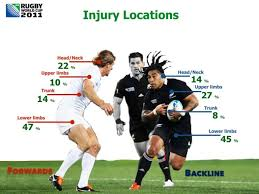
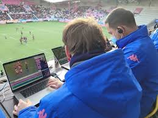

Comment l'IA transforme le rugby moderne — de l'analyse de performance à l'expérience spectateur.

L'IA traite des milliers de données en temps réel — passes, plaquages, courses — pour offrir aux coachs une lecture précise et instantanée de chaque joueur.

Analyse des habitudes adverses, simulation de scénarios, construction de plans de match précis. Les données deviennent des décisions opérationnelles.


Stats en direct, explication des phases de jeu, contenus personnalisés selon les préférences de chaque supporter. Le stade devient intelligent.
Modèles prédictifs basés sur les données historiques, la forme récente des joueurs et les conditions de match pour estimer les scénarios de résultat.